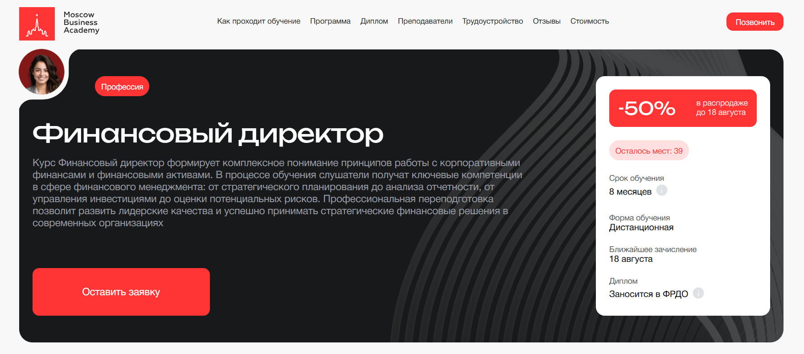
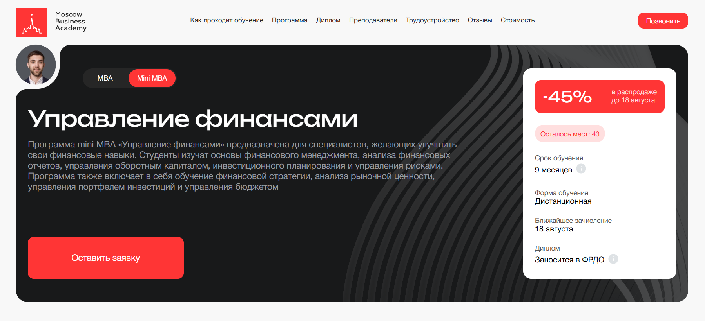
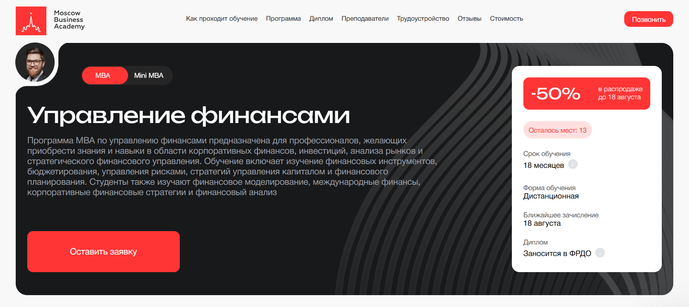
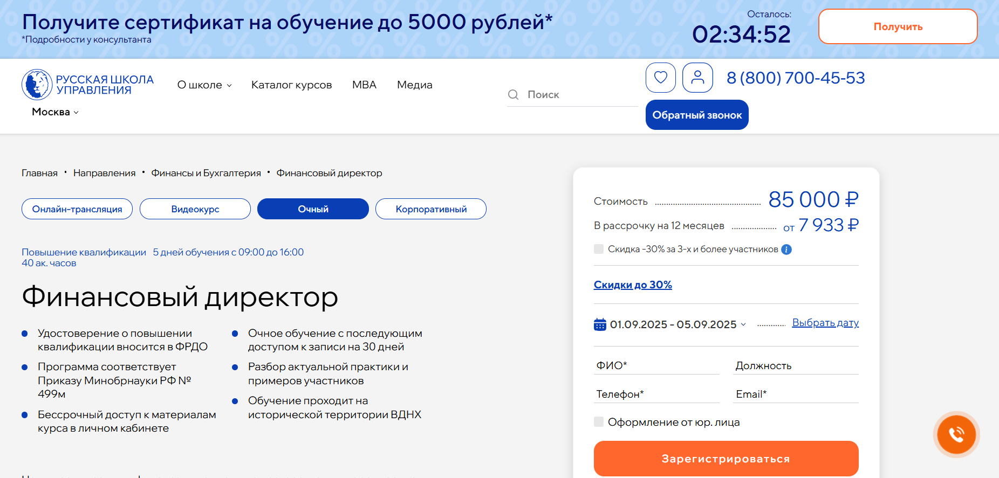
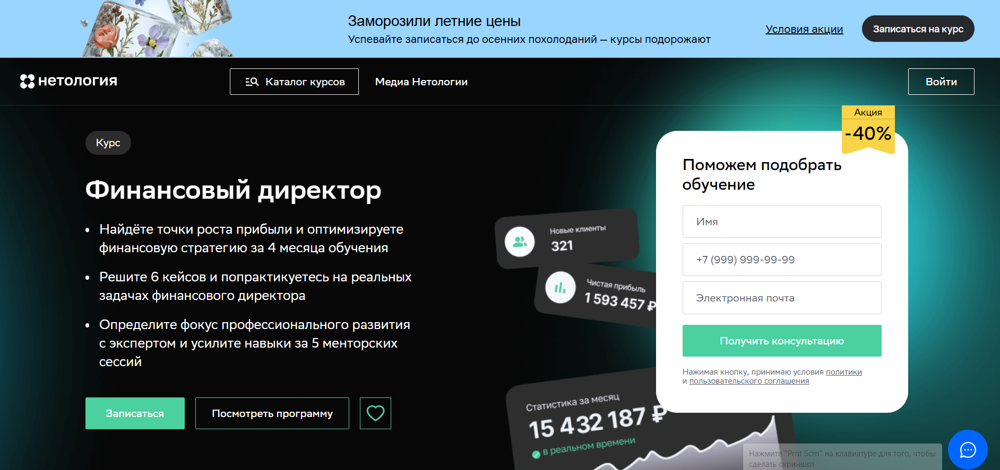
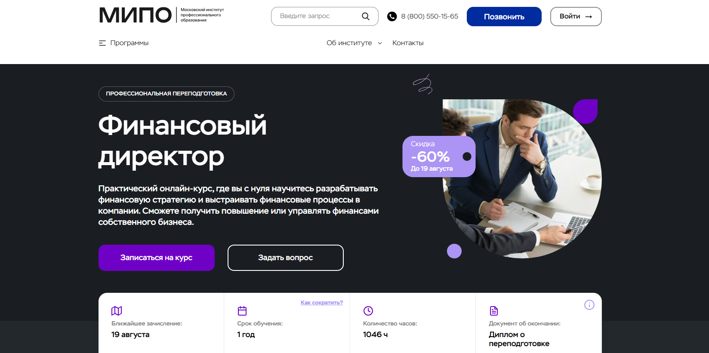
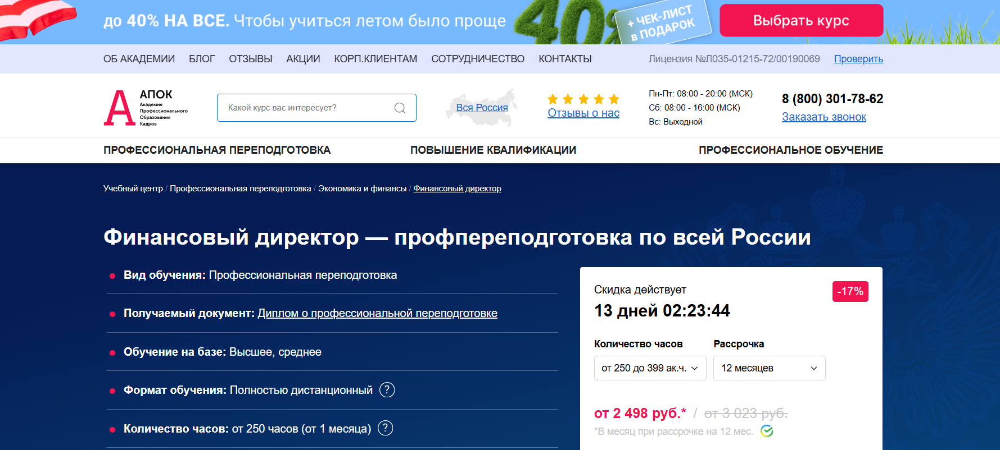
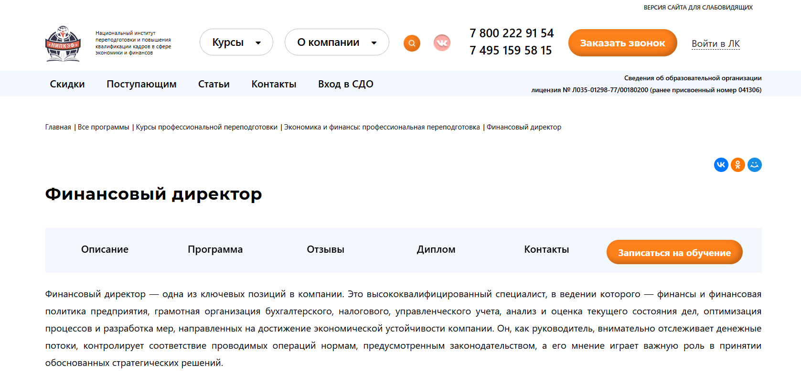
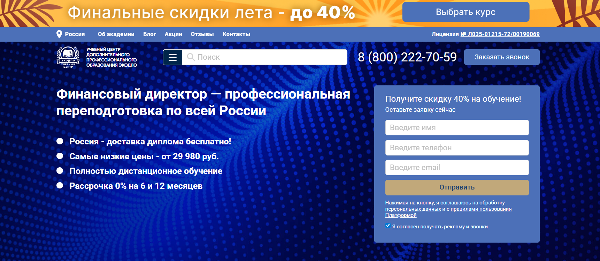

Финансовый директор (CFO) — ключевая должность в любой компании, связанная с управлением финансами, финансовым планированием и контролем финансовых потоков. Чтобы успешно справляться с задачами стратегического менеджмента, анализировать финансовые показатели, оценивать риски и разрабатывать финансовые стратегии, специалисту необходимы глубокие знания в области финансового менеджмента и развитые управленческие навыки. Обучение финансовых директоров включает программы переподготовки, курсы повышения квалификации и дистанционные форматы обучения, где слушатели получают практические навыки работы с финансовой отчетностью, управленческим учетом и корпоративными финансами. Мы составили рейтинг образовательных программ для CFO, которые помогут освоить навыки анализа отчетности, разработку стратегий и построение финансовых моделей, а также повысить квалификацию до уровня, соответствующего профессиональным стандартам.
Информация обновлена:
ТОП онлайн-курсов обучения на Финансового Директора (CFO)
- 🏆 Финансовый директор — Академия Eduson (по промокоду onlinekursy скидка 🎁 5%)
- 🏆 Директор по экономике и финансам – Eduson Academy (по промокоду onlinekursy скидка 🎁 5%)
- 🏆 Финансовый директор — Московская Бизнес Академия (по промокоду onlinekursy скидка 🎁 10%)
- Mini MBA «Управление финансами» — Московская Бизнес Академия (по промокоду onlinekursy скидка 🎁 10%)
- MBA по управлению финансами — Московская Бизнес Академия (по промокоду onlinekursy скидка 🎁 10%)
- Mini-MBA: Финансовый директор — SF Education (по промокоду onlinekursy скидка 🎁 15%)
- Финансовый директор — SF Education (по промокоду onlinekursy скидка 🎁 15%)
- Финансовый директор — Русская Школа Управления
- Финансовый директор. Профессиональная переподготовка — Русская Школа Управления
- Финансовый директор — Skillbox
- Финансовый директор — Нетология
- Финансовый директор. Управление финансами организации — Moscow Business School
- Онлайн-курс директор по финансам 2026 — City Business School
- Финансовый директор — MITM
- Финансовый директор — МИПО (по промокоду onlinekursy действует скидка 🎁 10%)
- Финансовый директор — Учебный центр АПОК
- Финансовый директор — НИПКЭФ
- Финансовый директор — Учебный центр «ЭКОДПО»
Отличительные преимущества каждой дистанционной программы обучения на финансового директора
| № | Курс и школа | Отличительные преимущества | Ссылка |
|---|---|---|---|
| 🥇 | Финансовый директор — Академия Eduson | 254 интерактивных занятия, поддержка куратора 365 дней в году, диплом гос. образца, доступ к материалам навсегда, обновления программы с нейросетями и МСФО | Перейти |
| 🥈 | Директор по экономике и финансам — Eduson Academy | 8-месячная программа, фокус на стратегическом планировании и управленческом учете, карьерная поддержка, гибкий график | Перейти |
| 🥉 | Финансовый директор — Московская Бизнес Академия | 8 месяцев, диплом в ФРДО, акцент на налоговом планировании и управленческой отчетности, карьерное сопровождение, гибкий график | Перейти |
| 4 | Mini MBA «Управление финансами» — Московская Бизнес Академия | Международный диплом, 70% практики, 9 месяцев обучения, итоговый проект, карьерные консультации | Перейти |
| 5 | MBA по управлению финансами — Московская Бизнес Академия | 18 месяцев, диплом международного образца, 70% практических кейсов, углубленный акцент на инвестиционном анализе и моделировании | Перейти |
| 6 | Mini-MBA: Финансовый директор — SF Education | 76 бизнес-кейсов, международный диплом ЕС, 15 модулей, 29 практических заданий, сквозной проект CFO | Перейти |
| 7 | Финансовый директор — SF Education | 320+ часов, 11 модулей, международные дипломы ЕС/HISTES/FMI, акцент на налоговом планировании и МСФО, карьерный центр | Перейти |
| 8 | Финансовый директор — Русская Школа Управления | Краткий 5-дневный курс, удостоверение гос. образца, сочетание очного и онлайн-формата, бессрочный доступ к материалам | Перейти |
| 9 | Финансовый директор. Профессиональная переподготовка — Русская Школа Управления | 5 месяцев, 70% практики, диплом с внесением в ФРДО, корпоративный формат, гибкий график | Перейти |
| 10 | Финансовый директор — Skillbox | 4 месяца, резюме выпускников на FinExecutive, преподаватели из VK и Skillbox, рассрочка до 31 месяца, HR-поддержка | Перейти |
| 11 | Финансовый директор — Нетология | Менторские сессии, воркшопы, бонусные курсы по Excel и Power BI, сообщество управленцев, 4 месяца | Перейти |
| 12 | Финансовый директор. Управление финансами организации — Moscow Business School | Интенсивный 3-дневный курс, очный или онлайн-формат, 85% выпускников получают повышение в течение года | Перейти |
| 13 | Онлайн-курс директор по финансам 2026 — City Business School | Международный диплом, 4–6 месяцев, геймификация, карьерный центр, гибкий график обучения | Перейти |
| 14 | Финансовый директор — Московский институт технологий и управления | 8 месяцев (или интенсив 4 месяца), диплом гос. образца, налоговый вычет 13%, поддержка куратора | Перейти |
| 15 | Финансовый директор — Московский институт профессионального образования | 1 год, диплом с регистрацией в ФИС-ФРДО и международным приложением, 1046 часов, цена от 38 900 ₽ | Перейти |
| 16 | Финансовый директор — Учебный центр АПОК | 1–3 месяца, диплом в ФИС ФРДО, доступные цены (от 29 980 ₽), бесплатная доставка диплома, гарантия возврата денег | Перейти |
| 17 | Финансовый директор — Национальный институт переподготовки и повышения квалификации кадров | 580 часов, 5 месяцев, диплом гос. образца, акцент на антикризисное управление, рассрочка до 35 месяцев | Перейти |
| 18 | Финансовый директор — ЭКОДПО | 1,5–3 месяца, диплом гос. образца с внесением в ФРДО, полностью онлайн, гибкие тарифы, бесплатная пересдача экзамена | Перейти |
1. 🏆 Финансовый директор — Академия Eduson
- ✅ Официальный сайт: eduson.academy
- 💸 Цена обучения: от 113 040 ₽ со скидкой 65% ( 322 992 ₽ без скидки).
- 💳 Рассрочка: от 9 420 ₽/мес - 12 месяцев без процентов.
- 📚 Формат: дистанционный формат — видеоуроки, 254 интерактивных занятия, 14 бизнес-кейсов, 18 практических заданий, тесты и тренажёры.
- ⏳ Продолжительность: индивидуальный график обучения.
- 📜 Документ: диплом о профессиональной переподготовке государственного образца.
- 📝 Трудоустройство: поддержка в карьерном развитии, возможность сотрудничества с «Нескучными финансами».
- 🔷 Для кого подходит курс: предприниматели, бухгалтеры, экономисты, аналитики, действующие CFO и специалисты, желающие повысить квалификацию.
Особенности:
Программа обучения акцентирована на практических навыках, включая финансовый анализ, управленческую отчетность и разработку стратегий для компаний разных сфер. Участники курса осваивают навыки анализа отчетности, финансовое моделирование и управление рисками. Формат обучения гибкий, что позволяет совмещать обучение с работой. Поддержка личного куратора доступна 365 дней в году, а учебная платформа обновляется с учетом новых требований и стандартов. Студенты получают доступ к материалам навсегда, что удобно для повторного изучения. Академия имеет государственную лицензию, а выданный диплом подтверждает профессиональные компетенции и соответствует современным образовательным стандартам. Слушатели изучают актуальные методы налогового планирования, оптимизации расходов и использования цифровых инструментов. Обновления включают темы по международным стандартам отчетности и работе с нейросетями.
Чему учатся студенты:
- Анализировать финансовую отчетность: P&L, ОДДС и баланс
- Разрабатывать финансовые стратегии и управлять денежными потоками
- Оценивать инвестиционные проекты с помощью IRR и NPV
- Использовать управленческий учет и составлять финансовые модели
- Проходить проверки государственных органов без штрафов
- Оптимизировать налоговый учет и управлять налоговыми рисками
- Применять инструменты стратегического менеджмента и риск-менеджмента
- Использовать нейросети для анализа конкурентов и оптимизации расходов
Преподаватели:
- Виктор Бурмистров — экс-вице-президент по финансам Maximum Education
- Азиза Улугова — заместитель финансового директора крупного медиа-холдинга
- Павел Вешаев — управленец и финансист в B2B секторе
- Виталий Полехин — президент Международной организации инвесторов INVESTORO
- Евгений Плаксенков — профессор Московской школы управления СКОЛКОВО
- Оксана Дажун — основатель «Dajun Consulting»
- Руслан Голованов — директор департамента МСФО холдинга «КорпЭстейт»
- Евгений Кромский — опыт в консалтинге и аудите Big4
- Антон Антонов — финансовый директор Maximum Education
- Руслан Ембергенов — CFO BI Group
Преимущества:
- Фокус на практике: реальные бизнес-кейсы и задания
- Поддержка личного куратора 7 дней в неделю
- Диплом государственного образца, который ценят работодатели
- Гибкий график обучения и доступ к материалам навсегда
- Обновления программы с учётом новых стандартов 2026 года
- Возможность совмещать обучение с работой
- Рассрочка и налоговый вычет 13%
Отзывы учеников:
Студенты отмечают, что программа помогла систематизировать опыт и освоить новые инструменты финансового менеджмента. Многие выделяют пользу от Excel-шпаргалок, доступ к практике и помощь кураторов. В отзывах часто подчеркивается рост профессиональных навыков, повышение квалификации и возможность выйти на должность финансового директора с зарплатой выше рынка.
Перейти на официальный сайт курса2. 🏆 Директор по экономике и финансам – Eduson Academy
- ✅ Официальный сайт: eduson.academy
- 💸 Цена: 159 600 ₽ (старая цена — 399 000 ₽)
- 💳 Рассрочка: доступна от 13 300 ₽/мес, можно оплатить частями без переплат
- 📚 Формат: дистанционный формат — видеолекции, тесты, домашние задания, реальные бизнес-кейсы
- ⏳ Продолжительность: 8 месяцев
- 📜 Документ: диплом о профессиональной переподготовке
- 📝 Трудоустройство: поддержка в поиске работы, консультации по резюме
- 🔷 Для кого подходит курс: руководителям, финансовым менеджерам, бухгалтерам, специалистам по корпоративным финансам, тем, кто хочет повысить квалификацию
Особенности:
Программа даёт слушателям управленческие навыки в сфере корпоративных финансов и помогает развивать профессиональные компетенции в области финансового менеджмента. Обучение проходит в дистанционном формате с удобным графиком обучения. Студенты получают навыки анализа отчётности, учатся составлять финансовые отчёты, работать с управленческим учётом и оценивать риски. Программа актуальна для 2026 года и включает методы стратегического планирования, разработку финансовых стратегий и инструменты эффективного управления бизнесом. После прохождения курсов выпускники получают диплом установленного образца, что позволяет повысить квалификацию и выйти на новый профессиональный уровень.
Чему учатся студенты:
- Анализировать финансовые показатели и отчётность
- Разрабатывать стратегию развития компании
- Оптимизировать финансовый менеджмент и управленческие процессы
- Оценивать риски и управлять денежными потоками
- Применять инструменты финансового моделирования и планирования бюджета
Преподаватели:
- Преподаватели Eduson Academy — эксперты в сфере корпоративных финансов и стратегического менеджмента, с опытом работы в ведущих компаниях России и международных организациях
Преимущества:
- Практические навыки на реальных кейсах
- Гибкий график обучения и удобный формат
- Помощь в трудоустройстве после успешного прохождения программы
- Доступ к учебным материалам и дополнительным ресурсам
- Фокус на финансовом анализе, налоговом планировании и управленческом учёте
Отзывы учеников:
Студенты отмечают, что обучение проходит в удобном дистанционном формате, материалы структурированы и понятны. Большим плюсом считают практические задания и возможность совмещать обучение с работой. Выпускники подчеркивают, что курс помогает повысить квалификацию, освоить новые профессиональные навыки и уверенно работать с финансовыми показателями компании.
Перейти на официальный сайт курса3. 🏆 Финансовый директор — Московская Бизнес Академия
- ✅ Официальный сайт: moscow.mba
- 💸 Цена: от 116 500 ₽ (со скидкой 50%).
- 💳 Рассрочка: от 4 854 ₽/мес до 36 месяцев, первый платеж через месяц.
- 📚 Формат: дистанционный формат, видеолекции, практические задания, тесты, индивидуальные проекты.
- ⏳ Продолжительность: 8 месяцев.
- 📜 Документ: диплом о профессиональной переподготовке, заносится в ФРДО.
- 📝 Трудоустройство: помощь в составлении резюме, подготовке портфолио, поиске вакансий и прохождении собеседований.
- 🔷 Для кого подходит курс: начинающим финансовым менеджерам, руководителям, желающим углубить финансовые знания, и специалистам для повышения квалификации.
Особенности:
Программа создана для тех, кто стремится освоить финансовый менеджмент и управленческие навыки без отрыва от работы. Обучение проходит на удобной онлайн-платформе с доступом к материалам из любой точки мира. Курсы построены так, чтобы слушатели научились анализировать финансовые отчеты, управлять рисками и инвестициями, разрабатывать стратегию компании и оптимизировать финансовый поток организации. В рамках прохождения программы предусмотрены практические кейсы, которые максимально приближены к реальным задачам бизнеса. Особое внимание уделяется налоговому планированию, финансовому моделированию и составлению управленческой отчетности. После успешного завершения обучения выпускники получают диплом и поддержку в трудоустройстве.
Чему учатся студенты:
- Анализировать финансовые показатели и управленческую отчетность
- Разрабатывать финансовые стратегии и планы бюджета
- Научиться управлять инвестициями и оценивать риски
- Использовать современные инструменты стратегического менеджмента
- Работать с налоговым учетом и финансовыми моделями
- Повышать эффективность управления денежными потоками организации
Преподаватели:
- Ицхак Пинтосевич — эксперт по личностному росту, автор 15 книг-тренингов
- Ангелина Шам — корпоративный бизнес-психолог, кандидат наук, автор книг по психологии и коммуникации
- Александр Степанов — лектор МГУ, эксперт по BTC, более 15 лет опыта в международных проектах
Преимущества:
- Обновляемая программа с учетом требований рынка
- Доступ к учебным материалам в любое время
- Практические навыки на основе реальных кейсов
- Гибкий график обучения и возможность совмещать с работой
- Поддержка кураторов и преподавателей на всех этапах
- Помощь в трудоустройстве и составлении конкурентного портфолио
Отзывы учеников:
Студенты отмечают насыщенность программы, удобный дистанционный формат обучения и доступность преподавателей. Чаще всего выделяют практическую направленность занятий, возможность совмещать учебу с работой и реальные навыки анализа отчетности, которые помогают в карьерном росте.
Перейти на официальный сайт курса4. Mini MBA «Управление финансами» — Московская Бизнес Академия
- ✅ Официальный сайт: moscow.mba
- 💸 Цена: 227 095 ₽ (со скидкой 45%).
- 💳 Рассрочка: 9 462 ₽/мес до 24 месяцев, первый платеж через месяц.
- 📚 Формат: дистанционный формат: видеолекции, практические задания, тесты, индивидуальные проекты, доступ к учебной платформе и дополнительным материалам.
- ⏳ Продолжительность: 9 месяцев.
- 📜 Документ: международный диплом о профессиональной переподготовке, вносится в ФРДО.
- 📝 Трудоустройство: помощь в составлении резюме, прохождении собеседований, формировании портфолио и поиске клиентов.
- 🔷 Для кого подходит курс: финансовым аналитикам, финансовым менеджерам, руководителям, предпринимателям и владельцам бизнеса, которые хотят повысить квалификацию и освоить навыки финансового планирования и анализа.
Особенности:
Программа сочетает обучение финансовому менеджменту, управленческому учету и практическим навыкам анализа отчетности. Студенты учатся разрабатывать финансовые стратегии, управлять рисками и оптимизировать денежные потоки компаний. Дистанционное обучение проходит в удобном формате с возможностью совмещать обучение с работой. В программу входят современные подходы к корпоративным финансам и налоговому планированию. Особое внимание уделяется финансовым моделям и разработке стратегий компании. В конце прохождения программы студенты выполняют итоговый проект, который закрепляет освоенные знания и повышает профессиональные компетенции. Выдается диплом установленного образца, соответствующий международным стандартам.
Чему учатся студенты:
- Проводить финансовый анализ и анализировать финансовые отчеты
- Разрабатывать стратегию компании и управлять рисками
- Составлять финансовые планы и бюджеты
- Оценивать инвестиционные проекты и методы управления активами
- Применять современные инструменты стратегического планирования и корпоративного учета
- Формировать налоговую политику и минимизировать налоговые риски
Преподаватели:
- Алексей Матушкин: магистр инноваций и социологии, преподаватель и лингво-коуч, опыт более 12 лет, член международной ассоциации IATEFL.
- Алексей Могилёв: предприниматель, преподаватель экономики и менеджмента, журналист и эксперт в сфере клиентских коммуникаций.
- Мария Егиазарова: выпускница МГУ им. Ломоносова, кафедра социальной психологии, бизнес-психолог и действующий спикер.
Преимущества:
- Обновленная в 2026 году программа с учетом требований работодателей
- 70% практических занятий и реальных кейсов
- Опытные преподаватели и спикеры из крупных компаний
- Возможность совмещать обучение с работой благодаря гибкому графику
- Дипломы государственного образца заносятся в ФРДО
- Доступ к образовательной платформе и дополнительным материалам
- Карьерные консультации и поддержка кураторов на протяжении всего обучения
Отзывы учеников:
Студенты отмечают высокий уровень подготовки и профессионализм преподавателей. Среди плюсов чаще всего упоминают удобный формат обучения, доступность материалов, большое количество практических заданий и возможность применения полученных знаний в работе уже в процессе обучения. Также выделяют карьерную поддержку академии и помощь в трудоустройстве.
Перейти на официальный сайт курса5. MBA по управлению финансами — Московская Бизнес Академия
- ✅ Официальный сайт: moscow.mba
- 💸 Цена обучения: 285 000 ₽ (со скидкой 50%).
- 💳 Рассрочка: 7 916 ₽ в месяц до 36 месяцев без переплат.
- 📚 Формат: дистанционный формат: видеолекции, практические задания, проекты, тесты, онлайн-вебинары, обратная связь от преподавателей.
- ⏳ Продолжительность: 18 месяцев.
- 📜 Документ: международный диплом о профессиональной переподготовке, заносится в ФРДО.
- 📝 Трудоустройство: карьерные консультации, помощь в составлении резюме, подготовке к собеседованиям, формировании портфолио.
- 🔷 Для кого подходит курс: для финансовых менеджеров, руководителей, предпринимателей и специалистов, желающих освоить финансовый анализ и разработку стратегий компании.
Особенности:
Обучение проходит в дистанционном формате с доступом к учебной платформе 24/7, что позволяет совмещать обучение с работой. Программа регулярно обновляется и соответствует современным профессиональным стандартам. Студенты получают практические навыки анализа отчетности, финансового моделирования, планирования бюджета и управления рисками. Образовательный процесс ориентирован на применение знаний в реальных бизнес-задачах, включая разработку финансовых стратегий компании. Особое внимание уделяется управленческой отчетности, оценке рисков и построению финансовых моделей. Выпускники получают диплом международного образца, что открывает новые карьерные перспективы. Поддержка кураторов и опытных преподавателей помогает проходить обучение с комфортом и завершить программу в срок.
Чему учатся студенты:
- Анализировать финансовые показатели и отчетность компании
- Разрабатывать финансовые стратегии и планы развития бизнеса
- Оценивать риски и управлять денежными потоками организации
- Использовать инструменты стратегического и налогового планирования
- Проводить инвестиционный анализ и оценку стоимости компании
- Применять методы финансового моделирования и бюджетирования
Преподаватели:
- Алексей Сотников — к.э.н., финансовый директор, преподаватель экономических дисциплин, консультант по МСФО.
- Валерия Трофимова — практикующий экономист в ВТБ, работает с международными компаниями, дипломированный советник, аспирант Финансового университета.
- Роман Могучев — специалист по внедрению корпоративного обучения, опыт работы в ведущих вузах Москвы.
Преимущества:
- Выдается диплом установленного образца с международным приложением
- 70% программы составляют практические задания и реальные кейсы
- Опытные преподаватели с практикой в российских и зарубежных компаниях
- Возможность совмещать обучение с работой благодаря гибкому графику
- Доступ к учебным материалам и онлайн-ресурсам из любой точки мира
- Поддержка кураторов и обратная связь от экспертов
Отзывы учеников:
Студенты отмечают удобный формат обучения и актуальность материалов. Часто выделяют практическую направленность курсов и полезные знания для работы в сфере финансов. Многие подчеркивают доступность преподавателей и возможность сразу применять полученные навыки в своей профессиональной деятельности. Отзывы указывают на рост профессиональных компетенций и карьерные перспективы после завершения программы.
Перейти на официальный сайт курса6. Mini-MBA: Финансовый директор — SF Education
- ✅ Официальный сайт: sf.education
- 💸 Цена обучения: от 180 234 ₽ (скидка до 65%).
- 💳 Рассрочка: от 10 013 ₽/мес до 18 месяцев без переплат, первый взнос через месяц.
- 📚 Формат: дистанционный формат: видеолекции, практические задания, тесты, онлайн-встречи 1-на-1, разбор кейсов.
- ⏳ Продолжительность: 9 месяцев.
- 📜 Документ: выдается диплом международного образца (ЕС) и официальный диплом о профессиональной переподготовке.
- 📝 Трудоустройство: карьерный центр помогает составить резюме, подготовиться к собеседованию и подобрать вакансии.
- 🔷 Для кого подходит курс: действующие финансовые директора, бухгалтеры, экономисты, финансисты, а также специалисты, которые хотят получить новую квалификацию и повысить профессиональный уровень.
Особенности:
Программа строится на практических занятиях и разборе 76 реальных бизнес-кейсов. Обучение проходит онлайн, что удобно для совмещения с работой. Включает 15 модулей, охватывающих финансовый учет, корпоративные финансы, международные стандарты отчетности, налоговое планирование и финансовое моделирование. Студенты выполняют 29 практических заданий, участвуют в вебинарах и получают обратную связь от экспертов. Обучение завершается сквозным проектом, максимально приближенным к реальной работе финансового директора. По окончании программы выпускники получают диплом, котируемый в России и ЕС, а также карьерное сопровождение. Доступ к материалам и обновлениям остается навсегда.
Чему учатся студенты:
- Анализировать финансовую отчетность и управленческую отчетность
- Разрабатывать финансовые стратегии и планировать бюджеты
- Оценивать риски и строить финансовые модели
- Управлять финансами компании и денежными потоками
- Анализировать эффективность бизнеса, проводить инвестиционный анализ
- Создавать DCF-модели и оценивать стоимость компании
- Готовить консолидированные отчеты по МСФО
- Оптимизировать финансовые процессы и налоговое планирование
Преподаватели:
- Антон Якушин — ex-Senior Associate, EY
- Александр Вальцев — Основатель и Генеральный директор SF Education
- Ксения Черменская — CFO, Yandex Verticals
- Евгения Тузова, ACCA — ex-руководитель отдела финансовой отчетности девелоперской компании
Преимущества:
- Международный диплом и официальная аккредитация
- Доступ к материалам курса и обновлениям навсегда
- Постоянная поддержка преподавателей и кураторов
- Карьерное сопровождение и помощь в трудоустройстве
- Современный дистанционный формат с удобным графиком обучения
- Практическая направленность: реальные кейсы и индивидуальные задания
- Возможность совмещать обучение с работой
Отзывы учеников:
Студенты отмечают доступность учебных материалов, высокую квалификацию преподавателей и удобный формат обучения. Часто подчеркивают практическую направленность, быстрый отклик кураторов и помощь карьерного центра в поиске вакансий.
Перейти на официальный сайт курса7. Финансовый директор — SF Education
- ✅ Официальный сайт: sf.education
- 💸 Цена: от 105 000 ₽, со скидкой до 65%.
- 💳 Рассрочка: от 5 833 ₽/мес до 18 месяцев без процентов.
- 📚 Формат: видеолекции, онлайн-разборы кейсов, практические задания, тесты, сквозной проект, консультации с экспертами.
- ⏳ Продолжительность: 6 месяцев, 11 модулей, 320+ часов занятий.
- 📜 Документ: диплом о профессиональной переподготовке международного образца (ЕС, HISTES, FMI).
- 📝 Трудоустройство: карьерный центр, база вакансий, помощь HR-экспертов, подготовка к интервью.
- 🔷 Для кого подходит курс: финансовым директорам, бухгалтерам, экономистам, специалистам в сфере управления и тем, кто планирует повышение квалификации.
Особенности:
Программа сочетает дистанционный формат с упором на реальные бизнес-кейсы, что позволяет отрабатывать управленческие навыки и финансовый анализ в практических заданиях. Студенты осваивают методы стратегического менеджмента, налоговое планирование и составление финансовой отчетности. Доступ к учебным материалам и обновлениям остается навсегда. Курсы включают поддержку куратора и обратную связь от преподавателей с опытом работы более 9 лет. Встроенный игровой формат мотивирует проходить обучение по графику. После окончания курсов выпускники получают международные дипломы, подтверждающие соответствие профессиональным стандартам. Слушатели учатся анализировать финансовые показатели, оценивать риски и разрабатывать стратегии управления. Учебный процесс построен так, чтобы совмещать обучение с работой и получать практический опыт сразу во время занятий.
Чему учатся студенты:
- Анализировать финансовые отчеты и управленческую отчетность
- Разрабатывать финансовые стратегии и планировать бюджеты
- Оценивать инвестиционные проекты (NPV, IRR, PI, DPP)
- Управлять денежными потоками и рисками
- Проводить финансовое моделирование и строить прогнозы
- Готовить отчеты по международным стандартам (МСФО)
- Оптимизировать налоговую нагрузку и снижать финансовые риски
Преподаватели:
- Антон Якушин — ex-Senior Associate, EY
- Александр Вальцев — основатель и генеральный директор SF Education
- Ксения Черменская — CFO, Yandex Verticals
- Евгения Тузова, ACCA — ex-руководитель отдела финансовой отчетности в девелоперской компании
Преимущества:
- 80% практики и реальные кейсы корпоративных финансов
- Доступ к учебной платформе и обновлениям без ограничения срока
- Возможность совмещать обучение с работой по гибкому графику
- Международные дипломы и сертификаты по окончании обучения
- Карьерный центр с поддержкой в трудоустройстве
- Преподаватели — практикующие финансовые менеджеры и аналитики
Отзывы учеников:
Студенты отмечают удобный формат обучения и возможность совмещать его с работой. Чаще всего подчеркивают ценность практических заданий и кейсов, благодаря которым удается освоить профессиональные навыки анализа отчетности и управления финансами. Выпускники положительно оценивают помощь карьерного центра и подтверждают, что после прохождения программы смогли повысить квалификацию и найти новые возможности на рынке труда.
Перейти на официальный сайт курса8. Финансовый директор — Русская Школа Управления
- ✅ Официальный сайт: uprav.ru
- 💸 Цена: 85 000 ₽.
- 💳 Рассрочка: доступна от 7 933 ₽/мес до 12 месяцев от ведущих банков.
- 📚 Формат: очные занятия, онлайн-трансляции, видеокурсы, практические задания, тесты, доступ к материалам в личном кабинете.
- ⏳ Продолжительность: 40 академических часов (5 дней) + бессрочный доступ к материалам.
- 📜 Документ: удостоверение о повышении квалификации государственного образца (с внесением в ФРДО).
- 📝 Трудоустройство: помогает повысить квалификацию и профессиональный уровень, выпускники успешно применяют знания в компании и продвигаются по карьерной лестнице.
- 🔷 Для кого подходит курс: для руководителей, специалистов финансовых отделов, бухгалтеров и тех, кто планирует карьерный рост в сфере корпоративных финансов.
Особенности:
Программа сочетает управленческий учет, бюджетирование, финансовое моделирование и налоговое планирование. Обучение проходит на ВДНХ в Москве или в дистанционном формате через удобные образовательные платформы. Включает практические кейсы, анализ финансовых показателей, разработку стратегий и построение финансовых моделей. Преподаватели — действующие эксперты в сфере финансов и аудита. По окончании обучения выпускники получают документы государственного образца, внесенные в Федеральный реестр. Студенты учатся оценивать риски, разрабатывать финансовые стратегии, управлять денежными потоками и повышать устойчивость бизнеса.
Чему учатся студенты:
- Управлять финансовыми потоками компании
- Проводить анализ финансовой и хозяйственной деятельности
- Планировать и контролировать бюджеты
- Разрабатывать управленческую отчетность
- Оптимизировать оборотный капитал
- Применять методы финансового моделирования
- Учитывать налоговые риски и планировать стратегию компании
Преподаватели:
- Петров Алексей Александрович — практикующий аудитор, бизнес-тренер, член Московской аудиторской палаты.
- Плотницкая Лариса Ивановна — эксперт по финансовому менеджменту, бизнес-тренер, автор системы финансового управления.
- Лукинский Дмитрий Георгиевич — эксперт в области корпоративных финансов и инвестиционного анализа.
- Ильдеменов Андрей Сергеевич — к.э.н., доцент, консультант по управлению и финансовому планированию.
Преимущества:
- Сочетание практики (70%) и теории (30%)
- Преподаватели — действующие специалисты в сфере финансов
- Бессрочный доступ к материалам курса
- Государственная лицензия и документы установленного образца
- Возможность пройти обучение в удобном формате — очно, онлайн или видеокурс
- Актуальные кейсы и работа с примерами из реальной практики
Отзывы учеников:
Студенты отмечают профессионализм преподавателей, практическую направленность занятий, удобный формат обучения и возможность сразу применять знания на работе. Большинство слушателей подчеркивают, что программа помогает систематизировать опыт, освоить новые навыки анализа отчетности и стратегического управления.
Перейти на официальный сайт курса9. Финансовый директор. Профессиональная переподготовка — Русская Школа Управления

- ✅ Официальный сайт: uprav.ru
- 💸 Цена обучения: от 270 000 ₽ до 300 000 ₽ в зависимости от формата.
- 💳 Рассрочка: предоставляется от 25 200 ₽/мес до 12 месяцев от ведущих банков.
- 📚 Формат: онлайн-трансляции, очное участие, видеокурс, тесты, практические задания, корпоративный формат.
- ⏳ Продолжительность: 5 месяцев (по 5 дней в месяц) или индивидуальный график.
- 📜 Документ: диплом о профессиональной переподготовке установленного образца с внесением в ФРДО.
- 📝 Трудоустройство: повышение квалификации и карьерный рост, востребованность специалистов в компаниях разных сфер.
- 🔷 Для кого подходит курс: для руководителей, специалистов в сфере финансов, бухгалтеров, а также для компаний, которые хотят повысить эффективность финансового планирования.
Особенности:
Программа сочетает теорию и практику: 70% обучения составляют разборы реальных кейсов и примеров. Студенты получают доступ к базе знаний с чек-листами и шаблонами, которые можно использовать в работе. Курс строится на анализе финансовых показателей, планировании бюджета, управленческом учете и налоговом планировании. Занятия проходят с опытными преподавателями в дистанционном формате с возможностью просмотра записей. Вы сможете научиться разрабатывать стратегию компании, управлять рисками и потоками организации, проводить финансовый анализ и оценку эффективности проектов. Доступ к материалам бессрочный, что позволяет совмещать обучение с работой.
Чему учатся студенты:
- Разрабатывать финансовые стратегии для роста компании
- Анализировать финансовые риски и управлять ими
- Планировать бюджеты и контролировать их исполнение
- Формировать управленческую отчетность и оценивать ключевые показатели
- Заниматься финансовым моделированием и налоговым планированием
- Оптимизировать структуру капитала и управлять денежными потоками
Преподаватели:
- Петров Алексей Александрович — практикующий аудитор, бизнес-тренер, член Московской аудиторской палаты
- Плотницкая Лариса Ивановна — эксперт по финансовому менеджменту, коуч, автор собственной системы управления
- Лукинский Дмитрий Георгиевич — специалист по корпоративным финансам и инвестиционному анализу
- Ильдеменов Андрей Сергеевич — к.э.н., доцент, консультант по финансовому планированию, автор учебных пособий
Преимущества:
- Бессрочный доступ к учебным материалам и обновлениям
- Возможность учиться в любом удобном формате — очно или онлайн
- Практические занятия и кейсы из реального бизнеса
- Преподаватели с опытом работы в крупных компаниях
- Документ государственного образца с внесением в ФРДО
- Гибкий график обучения для занятых специалистов
Отзывы учеников:
Слушатели отмечают высокий уровень организации и актуальность материалов. Большинство положительных отзывов связано с практическими кейсами и реальными примерами, которые помогают лучше понять финансовый менеджмент. Многие подчеркивают, что курс помогает повысить квалификацию, систематизировать знания и получить новые профессиональные навыки для карьерного роста.
Перейти на официальный сайт курса10. Финансовый директор – Skillbox
- ✅ Официальный сайт: skillbox.ru
- 💸 Цена: от 130 484 ₽ со скидкой 50%.
- 💳 Рассрочка: от 5 452 ₽/мес на 31 месяц, первый платёж через 6 месяцев.
- 📚 Формат: дистанционный формат: видеолекции, практические задания, тесты, кейсы, доступ к учебной платформе.
- ⏳ Продолжительность: 4 месяца, 181 час теории и 20 часов практики.
- 📜 Документ: диплом о профессиональной переподготовке установленного образца.
- 📝 Трудоустройство: резюме выпускников попадает на портал FinExecutive, поддержка HR-консультанта.
- 🔷 Для кого подходит курс: бухгалтерам, финансовым специалистам, управленцам и предпринимателям, которые хотят освоить управленческую отчётность и повысить квалификацию.
Особенности:
Программа создана практикующими финансовыми директорами из крупных компаний. Студенты учатся анализировать финансовые показатели, управлять денежными потоками и разрабатывать финансовые стратегии для бизнеса. Доступ к материалам остаётся навсегда, а учебная платформа позволяет совмещать обучение с работой. Каждый слушатель получает обратную связь от кураторов и консультации HR-специалистов. В курсе предусмотрены кейсы по финансовому анализу, составлению финансовых моделей и разработке стратегий. Программа охватывает налоговое планирование, финансовое моделирование и управление рисками. Практика основана на реальных бизнес-задачах, что позволяет применять знания в работе сразу после прохождения обучения.
Чему учатся студенты:
- Анализировать финансовую отчетность и управленческую отчётность
- Разрабатывать стратегию компании и финансовые планы
- Проводить финансовое моделирование и анализ ключевых показателей
- Управлять рисками и оценивать инвестиционные проекты
- Составлять финансовые модели, P&L и Cash Flow
- Оптимизировать расходы и управлять эффективностью компании
Преподаватели:
- Александр Морозов — вице-президент по экономике и финансам в VK
- Виталий Устименко — финансовый директор в Skillbox, член совета директоров MD Medical Group
- Денис Дубовцев — финансовый директор Order Capital
- Дмитрий Заец — финансовый директор
- Надежда Лебедева — управляющий директор банка, специалист FCCA
- Юрий Герман — CFO международной компании, MBA
- Дмитрий Бородин — инвестиционный директор, более 12 лет опыта
- Татьяна Жукова — руководитель и преподаватель школы финансовых директоров
- Александр Идрисов — эксперт по стратегическому менеджменту
- Геннадий Ванин — управляющий партнёр Birge
Преимущества:
- Доступ к учебным материалам навсегда
- Индивидуальные консультации и помощь HR-специалиста
- Практика на реальных кейсах и бизнес-задачах
- Резюме выпускников в базе FinExecutive
- Гибкий график обучения и удобный формат занятий
- Скидка до 60% и бесплатные дополнительные курсы
Отзывы учеников:
Студенты отмечают качественную подачу материала, удобный формат обучения и возможность совмещать занятия с работой. Многие выделяют практическую направленность программы и полезные кейсы. Среди плюсов также называют поддержку кураторов и реальную помощь в трудоустройстве.
Перейти на официальный сайт курса11. Финансовый директор – Нетология
- ✅ Официальный сайт: netology.ru
- 💸 Цена: от 121 900 ₽ (акция –40%).
- 💳 Рассрочка: от 3 563 ₽/месяц без переплат.
- 📚 Формат: видеолекции, воркшопы, практические задания, менторские сессии, бонусные курсы по Excel, Google Таблицам и Slides.
- ⏳ Продолжительность: 4 месяца (101 час теории и 82 часа практики).
- 📜 Документ: удостоверение о повышении квалификации.
- 📝 Трудоустройство: выпускники получают помощь в развитии карьеры и доступ к комьюнити управленцев.
- 🔷 Для кого подходит курс: главным бухгалтерам, опытным финансистам, финансовым директорам, специалистам в сфере финансов.
Особенности:
Программа создана для специалистов, желающих повысить квалификацию и освоить управленческую отчетность на практике. Студенты работают с реальными кейсами и финансовыми стратегиями ведущих компаний. Курс помогает научиться анализировать финансовые показатели, разрабатывать стратегию развития и управлять денежными потоками предприятия. Занятия проходят в дистанционном формате с гибким графиком обучения, что позволяет совмещать процесс прохождения курсов с работой. Обучение включает менторское сопровождение, практические задания и работу с учебной платформой. По окончании обучения выпускники получают документ установленного образца и могут оценивать риски, заниматься налоговым планированием и финансовым моделированием. Это профессиональное образование отвечает современным требованиям рынка и помогает студентам освоить навыки анализа и построения финансовых моделей.
Чему учатся студенты:
- Анализировать финансовую отчетность для принятия решений
- Разрабатывать финансовые стратегии и оценивать риски
- Проводить инвестиционный анализ и управлять корпоративными финансами
- Создавать систему управленческого учета и бюджетирования
- Использовать инструменты Power BI для анализа данных
- Формировать финансовую отчетность и оценивать эффективность компании
Преподаватели:
- Дарья Грачёва — финансовый директор, кандидат экономических наук, 12 лет опыта в экономике и финансах.
- Инна Шкилева — финансовый директор, кандидат экономических наук, более 20 лет опыта в финансах.
- Борис Розентул — финансовый директор «Лига-Холдинг», кандидат наук, эксперт в области управления.
- Юлия Беляева — финансовый директор группы компаний «Интертек Рус», 20 лет опыта управления финансами.
- Светлана Гаврилова — партнёр Genome Capital, преподаватель ВШЭ, эксперт в инвестициях и аудите.
Преимущества:
- Дистанционный формат обучения с гибким графиком
- Работа над реальными кейсами ведущих компаний
- Поддержка экспертов и индивидуальные менторские сессии
- Бонусные курсы по Excel и работе с данными
- Доступ к комьюнити управленцев и карьерным возможностям
- Документ о повышении квалификации государственного образца
- Возможность совмещать обучение с работой
Отзывы учеников:
Студенты отмечают удобный формат обучения, актуальность практических заданий и высокий уровень преподавателей. Часто подчеркивают пользу от менторских сессий и возможность работать с реальными задачами. Положительно оценивают поддержку сообщества и доступ к дополнительным материалам после завершения курсов.
Перейти на официальный сайт курса12. Финансовый директор. Управление финансами организации – Moscow Business School
- ✅ Официальный сайт: mbschool.ru
- 💸 Цена обучения: 55 900 ₽ (при оплате онлайн — 50 310 ₽).
- 💳 Рассрочка: доступна от 4 658 ₽/мес для физических и юридических лиц.
- 📚 Формат: очно или онлайн, практические занятия, кейсы, разбор отчетности.
- ⏳ Продолжительность: 3 дня (ежедневно с 10:00 до 17:30).
- 📜 Документ: удостоверение о повышении квалификации или сертификат Moscow Business School.
- 📝 Трудоустройство: выпускники получают карьерный рост — 85% слушателей повышают должность в течение года.
- 🔷 Для кого подходит курс: финансовых директоров, руководителей финансовых отделов, главных бухгалтеров и специалистов, связанных с корпоративными финансами.
Особенности:
Курс дает системное понимание управления корпоративными финансами, акцентируя внимание на финансовом анализе, планировании бюджета и оптимизации налоговой политики. Программа подходит для руководителей, которые хотят научиться анализировать финансовые показатели и выстраивать стратегию развития компании. Обучение проходит в удобном формате: можно выбрать очное посещение или дистанционный формат. Слушатели осваивают навыки анализа отчетности, финансового моделирования, управления денежными потоками и стратегического планирования. По окончании обучения участники получают документы, соответствующие профессиональным стандартам и признанные работодателями. Особое внимание уделяется риск-менеджменту, оценке эффективности и современным методам финансового управления. Обучение ведут практикующие эксперты, что обеспечивает высокий уровень профессиональной подготовки.
Чему учатся студенты:
- Управлять финансами на разных стадиях развития бизнеса
- Внедрять системы управленческого учета и бюджетирования
- Анализировать финансовые результаты и показатели эффективности
- Разрабатывать финансовые стратегии и планирование бюджета
- Оптимизировать финансовые потоки и налоговое планирование
- Оценивать риски и использовать инструменты стратегического менеджмента
Преподаватели:
- Плотницкая Лариса Ивановна — бизнес-тренер, эксперт в управлении корпоративными финансами, основатель и генеральный директор ООО «Финансовый навигатор», специалист по автоматизации управленческого учета и налоговому планированию.
Преимущества:
- Документ установленного образца, который можно добавить в профессиональное портфолио
- Гибкий формат обучения: очные занятия или дистанционные курсы
- Практическая направленность — разбор реальных кейсов и задач
- Преподаватели с опытом более 5 лет работы в сфере корпоративных финансов
- Скидка 15% при оплате онлайн и специальные условия для корпоративного обучения
- Возможность совмещать обучение с рабочим графиком
Отзывы учеников:
Слушатели отмечают, что занятия помогают структурировать знания и применить новые инструменты на практике. Финансовые директора подчеркивают высокий уровень преподавания, полезность практических заданий и актуальность материалов для ежедневной работы.
Перейти на официальный сайт курса13. Онлайн-курс директор по финансам 2026 — City Business School

- ✅ Официальный сайт: lp.e-mba.ru
- 💸 Цена: от 58 000 ₽ (скидка 50%).
- 💳 Рассрочка: от 2 417 ₽/мес до 24 месяцев, беспроцентная.
- 📚 Формат: дистанционный формат — видеолекции, практические задания, тесты, кейсы, геймификация, карьерное сопровождение.
- ⏳ Продолжительность: от 4 до 6 месяцев (166–264 часа).
- 📜 Документ: диплом о профессиональной переподготовке или удостоверение о повышении квалификации + международный диплом.
- 📝 Трудоустройство: карьерный центр, консультации и помощь в составлении резюме.
- 🔷 Для кого подходит курс: для финансовых специалистов, руководителей, собственников бизнеса и тех, кто планирует повысить квалификацию и претендовать на должность CFO.
Особенности:
Программа сочетает финансовый менеджмент с практическими кейсами и гибким графиком обучения. Студенты изучают управленческую отчетность и финансовые стратегии, осваивают навыки анализа и методы финансового планирования. Учебный процесс построен на реальных примерах, что позволяет быстро научиться разрабатывать стратегию компании и разрабатывать финансовые модели. Обучение проходит на удобной образовательной платформе, где доступны все материалы 24/7. После окончания обучения выпускники получают диплом международного образца, который признается в России и за рубежом. В программу включены инструменты стратегического менеджмента, корпоративные финансы и методы оценки ключевых показателей. Благодаря дистанционному обучению можно совмещать карьеру и подготовку специалистов без ущерба для рабочего графика.
Чему учатся студенты:
- Читать финансовую и налоговую отчетность, анализировать ошибки
- Разрабатывать стратегию развития компании и планировать бюджет
- Оценивать риски и управлять финансовыми потоками
- Проводить инвестиционный анализ и оценку эффективности бизнеса
- Использовать управленческий учет и финансовое моделирование
- Оптимизировать налоги и контролировать денежные потоки
Преподаватели:
- Андрей Кениг — кандидат экономических наук, эксперт в области финансовых институтов
- Максим Белов — экс-финансовый директор группы компаний Ninelle (Испания)
- Александр Егоров — финансовый директор крупных холдингов, участник инвестпроектов в IT
- Анастасия Воробьева — бизнес-партнер по финансам в Национальной Медиа Группе
Преимущества:
- Международные дипломы, признаваемые работодателями
- Гибкий график обучения на современной онлайн-платформе
- Закрытое сообщество выпускников и карьерное сопровождение
- Практические навыки анализа отчетности и управления рисками
- Рассрочка до 24 месяцев без переплаты
- Доступ к актуальным инструментам стратегического планирования
Отзывы учеников:
Студенты отмечают удобный формат обучения и качественный подбор преподавателей. Подчеркивают практическую направленность курса, большое количество реальных кейсов и возможность совмещать обучение с работой. Многие выпускники отмечают карьерный рост и повышение дохода после завершения программы.
Перейти на официальный сайт курса14. Финансовый директор — Московский институт технологий и управления
- ✅ Официальный сайт: mitm.institute
- 💸 Цена обучения: 160 500 ₽, со скидкой 30% — 112 440 ₽ .
- 💳 Рассрочка: беспроцентная - 13 380 ₽/мес, со скидкой 30% — 9 370 ₽/мес, на 12 месяцев, доступна рассрочка от «Тинькофф Банка».
- 📚 Формат: дистанционный формат, онлайн-лекции, записи занятий, практические задания, тесты.
- ⏳ Продолжительность: 8 месяцев, возможен интенсивный вариант — 4 месяца.
- 📜 Документ: выдается диплом государственного образца о профессиональной переподготовке или удостоверение о повышении квалификации.
- 📝 Трудоустройство: помощь в актуализации знаний, развитие управленческих навыков для карьерного роста.
- 🔷 Для кого подходит курс: менеджеров и специалистов в области финансов, аналитиков и контролеров, предпринимателей, а также новичков, желающих получить новую профессию.
Особенности:
Программа ориентирована на подготовку финансовых директоров с учетом профессиональных стандартов и современных требований работодателей. Обучение проходит в удобном формате, позволяя совмещать учебу с работой. Студенты осваивают навыки анализа отчетности, финансового моделирования и разработки стратегий для бизнеса. В ходе занятий используется система дистанционного образования, которая обеспечивает доступ к лекциям и практическим материалам 24/7. Слушатели получают возможность учиться у экспертов с большим практическим опытом и научиться эффективно управлять финансами предприятия. После прохождения программы выпускники получают дипломы государственного образца, что подтверждает высокий уровень профессиональной подготовки. Доступ к образовательной платформе сохраняется до завершения курсов, что дает возможность повторно изучать учебные материалы и закреплять знания.
Чему учатся студенты:
- Анализировать финансовые показатели и управленческую отчетность
- Разрабатывать финансовые стратегии и планировать бюджеты
- Оценивать риски и оптимизировать налоговое планирование
- Управлять денежными потоками организации
- Применять методы финансового анализа и моделирования
- Повышать эффективность корпоративных финансовых отделов
- Составлять и контролировать финансовую отчетность компании
Преподаватели:
- Вячеслав Александров — финансовый консультант, трейдер в OSTC ATON, специалист по корпоративным финансам, DCF, МСФО.
- Наталья Шувалова — предприниматель, бизнес-тренер, кандидат экономических наук (РУДН), более 17 лет опыта в аудите и бухгалтерском учете.
- Алина Садыкова — финансовый директор, главный бухгалтер, работала с ПАО «Татнефть», опыт в корпоративных финансах и налоговом учете.
Преимущества:
- Дистанционный формат обучения без отрыва от работы
- Диплом государственного образца, подтверждающий квалификацию
- Поддержка куратора и доступ к материалам 24/7
- Возможность вернуть 13% стоимости обучения через налоговый вычет
- Преподаватели с реальным опытом и многолетней практикой
- Интенсивное обучение — от 4 месяцев для ускоренного результата
- Гибкий график обучения с сохранением доступа к материалам до окончания программы
Отзывы учеников:
Студенты отмечают удобный дистанционный формат, возможность совмещать учебу с работой и практическую направленность курса. Среди плюсов чаще всего выделяют доступность преподавателей, актуальность материалов и возможность получить диплом государственного образца. Многие подчеркивают, что курс помогает повысить квалификацию и дает реальные инструменты для карьерного роста.
Перейти на официальный сайт курса15. Финансовый директор — Московский институт профессионального образования
- ✅ Официальный сайт: mipo.msk.ru
- 💸 Цена: 38 900 ₽ (со скидкой 60%, полная стоимость 97 300 ₽)
- 💳 Рассрочка: до 24 месяцев, от 1 621 ₽ в месяц
- 📚 Формат: дистанционный формат: онлайн-вебинары, записи лекций, тесты, практические задания, кураторская поддержка
- ⏳ Продолжительность: 1 год (1046 часов)
- 📜 Документ: диплом о профессиональной переподготовке с регистрацией в ФИС-ФРДО
- 📝 Трудоустройство: выпускники переходят на руководящие должности, получают повышение или развивают собственный бизнес
- 🔷 Для кого подходит курс: собственники и директора компаний, главные бухгалтеры, финансовые менеджеры и специалисты, стремящиеся повысить квалификацию
Особенности:
Образовательная программа ориентирована на специалистов, которые хотят научиться разрабатывать финансовые стратегии и управленческую отчетность. Курс сочетает теорию и практику, включая анализ финансовых показателей и оценку рисков. В процессе обучения студенты осваивают финансовый менеджмент, стратегическое планирование и налоговое регулирование. Дистанционный формат позволяет совмещать занятия с работой. Программа включает вебинары, работу с кейсами, тестирование и индивидуальную помощь куратора. По окончании обучения слушатели получают диплом, который котируется в России и за рубежом. Выпускники успешно осваивают практические навыки, необходимые для управления корпоративными финансами и оценки эффективности бизнеса.
Чему учатся студенты:
- Анализировать финансовую отчетность и управленческую отчетность
- Разрабатывать финансовые стратегии и управлять рисками
- Оптимизировать налоговое планирование и снижать налоговые риски
- Оценивать инвестиционные проекты и бизнес
- Составлять финансовые модели и прогнозы
- Выстраивать процессы бюджетирования и финансового планирования
Преподаватели:
- Васильева Елена — генеральный директор и основатель аудиторской компании, эксперт в бухучете и менеджменте
- Кузина София — карьерный коуч Сбербанка, спикер Сколково и Ассоциации спикеров России и СНГ
- Тарасова Людмила — преподаватель с опытом более 25 лет, руководитель проектов в юридическом образовании
- Лебедев Александр — бизнес-трекер и ментор в сфере телеком и IT
- Скрипачева Елена — эксперт по управлению продажами, автор методических пособий
- Королева Елена — специалист в управлении конфликтами и стрессами, MBA Warwick Business School
Преимущества:
- Гибкий дистанционный формат обучения с доступом к материалам 24/7
- Диплом установленного образца с регистрацией в ФИС-ФРДО и международным приложением
- Программа разработана практикующими экспертами с опытом в крупных компаниях
- Включение реальных кейсов и практических заданий
- Помощь куратора на протяжении всего периода обучения
- Возможность совмещать обучение с профессиональной деятельностью
- Высокие результаты выпускников: рост финансовых показателей и переход в престижные компании
Отзывы учеников:
Студенты отмечают удобный формат обучения, возможность совмещать учебу с работой и доступ к практическим кейсам. Среди плюсов чаще всего выделяют профессионализм преподавателей, актуальность материалов и реальную пользу для карьерного роста. Многие выпускники подчеркивают, что программа помогла улучшить финансовые показатели бизнеса и получить новые должности.
Перейти на официальный сайт курса16. Финансовый директор — Учебный центр АПОК
- ✅ Официальный сайт: apokdpo.ru
- 💸 Цена обучения: от 29 980 ₽ (со скидкой -17%).
- 💳 Рассрочка: до 12 месяцев, от 2 498 ₽ в месяц.
- 📚 Формат: полностью дистанционный формат, учебные материалы, тесты, зачеты, экзамен.
- ⏳ Продолжительность: от 250 часов (1–3 месяца).
- 📜 Документ: диплом о профессиональной переподготовке, внесенный в ФИС ФРДО.
- 📝 Трудоустройство: помощь в согласовании с работодателем для компенсации стоимости обучения.
- 🔷 Для кого подходит курс: для специалистов с высшим или средним образованием, желающих получить новую квалификацию и повысить профессиональный уровень в сфере финансов.
Особенности:
Программа строится на изучении дисциплин, связанных с финансовым менеджментом и управленческой отчетностью. Обучение проходит онлайн, что удобно для специалистов, совмещающих учебу с работой. Слушатели получают практические навыки анализа финансовых показателей и разработки стратегий развития компании. Выпускники курса умеют оценивать риски, планировать бюджеты и управлять денежными потоками. Диплом действует на всей территории России и соответствует профессиональным стандартам. По окончании курса студенты осваивают инструменты стратегического менеджмента, учатся анализировать финансовые отчеты и разрабатывать финансовые модели для оптимизации ресурсов компании.
Чему учатся студенты:
- Проводить финансовый анализ и прогнозировать финансовое состояние организации
- Разрабатывать стратегию компании и управлять корпоративными финансами
- Анализировать финансовые отчеты и ключевые показатели эффективности
- Применять инструменты налогового планирования и управленческого учета
- Оценивать риски и использовать методы финансового моделирования
Преподаватели:
- Селезнёва Мария Анатольевна — заместитель руководителя методического отдела, автор программы
Преимущества:
- Полностью дистанционное обучение с гибким графиком
- Бесплатная доставка диплома по всей России
- Возможность ускоренной программы по согласованию с менеджером
- Рассрочка 0% на срок до 12 месяцев
- Скидки до 40% при семейном обучении
- Гарантия возврата денег, если курс не подойдет
Отзывы учеников:
Студенты отмечают удобный формат обучения, доступные материалы и практическую ценность программы. Большинство выпускников подчеркивают, что полученные знания помогают в карьерном росте, а диплом способствует повышению квалификации и подтверждению профессиональных компетенций.
Перейти на официальный сайт курса17. Финансовый директор – Национальный институт переподготовки и повышения квалификации кадров в сфере экономики и финансов
- ✅ Официальный сайт: nipkef.ru
- 💸 Цена обучения: 68 300 ₽ (81 900 ₽ без скидки).
- 💳 Рассрочка: от 5 692 ₽/мес до 35 месяцев от банков-партнеров без процентов.
- 📚 Формат: дистанционный формат с вебинарами, видеолекциями, тестами, практическими заданиями и доступом к учебным материалам.
- ⏳ Продолжительность: 580 часов (5 месяцев).
- 📜 Документ: диплом о профессиональной переподготовке установленного образца.
- 📝 Трудоустройство: выпускники получают диплом и могут претендовать на должность руководителя финансовых служб, консультанта или бухгалтера.
- 🔷 Для кого подходит курс: экономисты, профессиональные бухгалтеры, финансисты, руководители отделов и предприниматели.
Особенности:
Программа обучения построена на практических кейсах и современных методиках, охватывающих ключевые аспекты корпоративных финансов. Обучение проходит в дистанционном формате с доступом к платформе, что позволяет совмещать учебу с работой. Студенты получают навыки анализа финансовых показателей и стратегического планирования, учатся разрабатывать финансовые стратегии и оценивать риски. Программа помогает освоить управление денежными потоками и эффективное использование ресурсов компании. Поддержка кураторов и опытных преподавателей гарантирует комфортный учебный процесс. Важным преимуществом является получение диплома, который соответствует профессиональным стандартам и требованиям ФГОС. Гибкий график обучения делает программу удобной для специалистов разного уровня подготовки.
Чему учатся студенты:
- Проводить финансовый анализ и работать с управленческой отчетностью
- Анализировать финансовые отчеты и международные стандарты
- Оценивать риски и использовать инструменты антикризисного управления
- Разрабатывать стратегию компании и планирование бюджета
- Управлять финансами предприятия и контролировать финансовые потоки
Преподаватели:
- Преподаватели института — эксперты-практики в сфере корпоративных финансов, стратегического менеджмента и бухгалтерского учета
- Кураторы — специалисты с опытом работы в финансовых отделах крупных компаний
Преимущества:
- Дистанционное обучение с удобным графиком
- Практические задания и кейсы для закрепления знаний
- Диплом государственного образца после окончания программы
- Поддержка преподавателей и кураторов на всех этапах обучения
- Возможность совмещать работу и учебу
- Рассрочка на обучение без переплат
- Широкий выбор дополнительных материалов и вебинаров
Отзывы учеников:
Студенты отмечают доступность дистанционного формата и удобный график обучения. Чаще всего выделяют высокий профессионализм преподавателей и полезные практические задания. Отзывы подчеркивают, что полученные знания помогают развивать управленческие навыки и повышать квалификацию для карьерного роста.
Перейти на официальный сайт курса18. Финансовый директор — Учебный центр дополнительного профессионального образования «ЭКОДПО»
- ✅ Официальный сайт: ecodpo.ru
- 💸 Цена обучения: от 29 980 ₽ (со скидкой 40%).
- 💳 Рассрочка: 2 498 ₽/мес - 0% на 6 или 12 месяцев.
- 📚 Формат: дистанционный формат, лекции, учебные материалы, тесты, итоговое экзаменационное задание.
- ⏳ Продолжительность: от 250 часов, 1,5–3 месяца.
- 📜 Документ: диплом о профессиональной переподготовке установленного образца.
- 📝 Трудоустройство: возможность работать в государственных структурах, консалтинге и бизнес-компаниях.
- 🔷 Для кого подходит курс: для специалистов с высшим и средним профобразованием, бухгалтеров, финансистов и руководителей, желающих повысить квалификацию.
Особенности:
Программа создана с учетом требований ФЗ №273 «Об образовании в РФ». Обучение проходит в удобном формате без отрыва от работы. Слушатели получают доступ к учебной платформе с дополнительными материалами и методичками, что позволяет эффективно совмещать обучение и работу. По окончании курса слушатель получает диплом, который заносится в ФИС ФРДО. Доставка документов осуществляется бесплатно по всей России. Заявка принимается онлайн, и уже в день отправки документов студент может приступить к обучению. Гибкая система учебных планов позволяет оптимизировать процесс освоения материала под индивидуальные цели.
Чему учатся студенты:
- Проводить финансовый анализ и оценку рисков
- Разрабатывать финансовые стратегии и планы развития
- Оценивать эффективность ключевых показателей компании
- Использовать методы финансового планирования и бюджетирования
- Научиться анализировать отчетность и управлять денежными потоками
- Применять практические навыки в сфере корпоративных финансов
Преподаватели:
- На сайте представлены методисты и опытные специалисты центра, информация о ФИО преподавателей уточняется в личном кабинете после записи на курс.
Преимущества:
- Полностью дистанционное обучение с доступом 24/7
- Возможность бесплатной пересдачи итоговых экзаменов
- Гибкие тарифы: Эконом, Стандарт и VIP
- Диплом государственного образца с внесением данных в ФИС ФРДО
- Скидки при обучении от организаций
- Индивидуальный график обучения
Отзывы учеников:
Студенты отмечают удобный формат обучения, доступные цены и качественные учебные материалы. Многие подчеркивают, что курс помогает освоить управленческие навыки и лучше анализировать финансовую отчетность. Положительно отзываются о поддержке кураторов и возможности совмещать обучение с работой.
Перейти на официальный сайт курсаКто такой финансовый директор?
Финансовый директор (часто используется аббревиатура CFO — Chief Financial Officer) — это ключевая фигура в управлении бизнесом. Он отвечает за стратегию компании в области финансов, контролирует движение денежных средств, формирует бюджеты и анализирует экономическую эффективность. От грамотных действий CFO напрямую зависит устойчивость бизнеса и его развитие.
Что делают финансовые директора и чем они занимаются?
Деятельность CFO охватывает широкий спектр задач: от контроля за бухгалтерией до стратегического планирования. Ни одна крупная компания не обходится без такого специалиста.
- Разработка финансовой стратегии компании.
- Формирование и контроль исполнения бюджета.
- Управление инвестициями и финансовыми рисками.
- Оптимизация налоговой нагрузки.
- Контроль бухгалтерского и управленческого учета.
- Подготовка отчетности для акционеров и инвесторов.
- Привлечение инвестиций и взаимодействие с банками.
Таким образом, финансовый директор — это не только управленец, но и стратег, который определяет финансовое будущее компании.
Что должен знать и уметь директор по финансам?
Профессия CFO требует глубоких знаний и обширных навыков. Это одна из самых ответственных должностей в бизнесе.
- Знание бухгалтерского учета и налогового законодательства.
- Умение управлять финансами компании и прогнозировать денежные потоки.
- Навыки работы с инвестициями и кредитными инструментами.
- Знание международных стандартов отчетности (IFRS, GAAP).
- Развитые управленческие и лидерские качества.
- Умение работать с финансовыми IT-системами (SAP, Oracle, 1С).
- Стратегическое мышление и аналитические способности.
Востребованность и зарплаты финансовых директоров в России в 2026 году
В 2026 году профессия финансового директора остается одной из самых высокооплачиваемых и престижных в России. Востребованность CFO растет как в крупных корпорациях, так и в средних компаниях, где усиливается конкуренция и необходим строгий контроль финансов.
- Средняя зарплата CFO в России — от 350 000 до 600 000 рублей в месяц.
- В Москве и Санкт-Петербурге уровень оплаты может достигать 1 000 000 рублей и выше.
- В регионах — от 200 000 до 350 000 рублей в месяц.
- Дополнительные бонусы: процент от прибыли компании, опционы на акции, премии по итогам года.
Такие цифры объясняются огромной ответственностью и влиянием CFO на результаты бизнеса.
Как стать директором по финансам и где учиться?
Путь к должности CFO достаточно долгий: чаще всего это специалисты с опытом работы главным бухгалтером, финансовым аналитиком или руководителем финансового отдела.
- Получить высшее образование в области экономики, финансов или бухгалтерского учета.
- Пройти дополнительное обучение по международным стандартам (IFRS, ACCA, CPA).
- Набраться опыта в должности финансового аналитика или руководителя отдела.
- Развивать управленческие навыки и стратегическое мышление.
- Прокачивать навыки работы с digital-инструментами для финансового контроля.
Какие перспективы у профессии финансового директора?
С каждым годом роль CFO в бизнесе усиливается. В 2026 году финансовые директора становятся не только контролерами, но и драйверами роста компаний. Все больше организаций ищут CFO с навыками digital-трансформации и стратегического анализа.
- Рост спроса на специалистов, владеющих международными стандартами отчетности.
- Активное внедрение автоматизации в финансовый учет.
- Необходимость понимания рынка инвестиций и венчурного капитала.
- Перспектива карьерного роста до CEO (генерального директора).
Финансовый директор — это стратег и управленец, от решений которого зависит успех компании. В 2026 году профессия остается одной из самых востребованных и престижных в России. Высокие зарплаты, широкие карьерные перспективы и возможность влиять на развитие бизнеса делают профессию CFO привлекательной для амбициозных специалистов. Но путь к этой должности требует серьезных знаний, опыта и лидерских качеств.
Что включает обучение на финансового директора?
Обучение на финансового директора включает изучение финансового менеджмента, навыков анализа финансовой отчетности, принципов управленческого учета, методов финансового планирования и построения финансовых стратегий. Студенты получают практические навыки работы с бюджетированием, налоговым планированием, финансовым моделированием и управлением рисками.
Какие профессиональные навыки развиваются при обучении на должность директора по финансам?
Во время прохождения программы слушатели осваивают управленческие навыки, умение анализировать финансовые показатели, разрабатывать стратегию компании, оценивать риски и строить прогнозы. Также развиваются компетенции в области корпоративных финансов, налогового учета и управления денежными потоками предприятия.
Какие форматы обучения на CFO доступны?
Современные образовательные платформы предлагают очное обучение, дистанционный формат, смешанные программы и корпоративное обучение. Дистанционное обучение позволяет совмещать учебу с работой, выбирая удобный формат и график обучения.
Чему учат курсы повышения квалификации для директоров по финансам?
Курсы повышения квалификации направлены на развитие профессиональных компетенций в области управления финансами, анализа отчетности, разработки финансовых моделей, построения системы управленческого учета и оценки ключевых показателей эффективности.
Какие знания нужны для успешного прохождения обучения на CFO?
Для успешного прохождения курсов важно владеть основами бухгалтерского учета, понимать финансовый анализ, иметь навыки работы с финансовыми отчетами и знания в сфере налогового планирования. Эти компетенции помогают быстрее усвоить учебные материалы и применять их в реальной практике.
Какие дипломы и сертификаты выдают после прохождения программы обучения?
После успешного завершения обучения выпускники получают дипломы государственного образца или международные дипломы, подтверждающие повышение квалификации или профессиональную переподготовку. Также возможна выдача официальных сертификатов по отдельным направлениям.
Сколько длится обучение на финансового директора?
Продолжительность обучения зависит от выбранного формата. Программы переподготовки могут занимать от 6 до 12 месяцев, а курсы повышения квалификации — от 2 недель до 3 месяцев. Длительность также определяется учебными планами и количеством практических занятий.
Какие практические навыки получает слушатель в процессе обучения?
Слушатель получает практические навыки по составлению финансовой отчетности, анализу данных, разработке финансовых стратегий, финансовому моделированию и оценке рисков. Практические кейсы и задания помогают применять знания к реальным задачам бизнеса.
Какие управленческие навыки формируются у финансового директора после обучения?
Обучение помогает научиться управлять финансами предприятия, выстраивать системы бюджетирования, принимать стратегические решения, управлять рисками и контролировать денежные потоки организации. Это формирует основу для эффективного управления компанией.
Как обучение помогает повысить эффективность управления финансами компании?
Во время учебного процесса слушатели изучают современные методы управления, учатся оценивать риски, проводить инвестиционный анализ, оптимизировать финансовый поток и применять инструменты стратегического менеджмента. Это позволяет повысить эффективность использования финансовых ресурсов компании.
Можно ли пройти обучение финансового директора дистанционно?
Да, дистанционное обучение является популярным выбором. В дистанционном формате обучение проходит с использованием современных образовательных платформ, доступ к учебным материалам предоставляется в любое время. Это позволяет совмещать обучение с работой и личными делами.
Как проходит процесс обучения и какие материалы предоставляются?
Учебный процесс включает лекции, вебинары, практические задания, работу с реальными кейсами и анализ финансовых отчетов. Слушателям предоставляются дополнительные материалы, шаблоны и образцы финансовых моделей, доступ к учебной платформе и сопровождение опытных преподавателей.
Сколько стоит обучение на финансового директора?
Стоимость обучения зависит от уровня программы: курсы повышения квалификации стоят дешевле, чем программы профессиональной переподготовки. Цена формируется с учетом продолжительности обучения, формата обучения и предоставляемых учебных материалов. Часто доступна оплата обучения в рассрочку.
Какие компетенции получает выпускник после завершения курсов?
После окончания курсов выпускник получает новую квалификацию, навыки финансового анализа, финансового планирования, управленческого учета, умение разрабатывать стратегию и оценивать эффективность работы компании. Это позволяет занимать должность финансового директора или руководителя финансового отдела.
Кому подойдет обучение на финансового директора (CFO)?
Обучение подойдет финансовым менеджерам, профессиональным бухгалтерам, финансовым аналитикам, руководителям финансовых отделов, а также предпринимателям, которые хотят научиться управлять финансами своего бизнеса. Слушатели освоят навыки, необходимые для успешного управления финансами предприятия.
------------------------------------------------
Реклама. Информация о рекламодателе по ссылкам в статье.